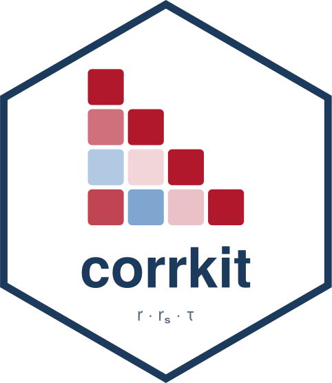

corrkit



corrkit réalise des analyses de corrélation avec des heatmaps et des tableaux qui expliquent ce qu’ils montrent.
Le package ne recalcule rien : chaque coefficient, chaque p-value et chaque intervalle vient d’une fonction existante et validée (stats::cor.test(), ppcor::pcor.test(), psych::corr.test(), correlation::correlation(), stats::p.adjust(), effectsize::rank_biserial()). Il ajoute par-dessus :
- des p-values brutes par défaut, comme dans la plupart des analyses de corrélation, et sur demande un ajustement sur une famille de tests explicite (
p_adjust,adjust_by) ; - un traitement à part des variables binaires (biomarqueur haut/bas, sexe) : blocs séparés, marque
[0/1], note de lecture, tailles d’effet à rapporter ; - des sorties annotées : sous-titres, légendes et notes de tableau qui donnent la méthode, le moteur, les formules (notation de Makowski et al. 2020, doi:10.21105/joss.02306), l’ajustement et la lecture.
Installation
Version de développement, depuis GitHub :
# install.packages("pak")
pak::pak("clement-poupelin/corrkit")Packages recommandés (moteurs et intervalles ; corrkit a un repli en R de base sans eux) :
install.packages(c("ppcor", "psych", "correlation", "effectsize"))Données d’exemple
simulate_cor_data() génère des biomarqueurs, des scores cliniques et des covariables dont on connaît la structure (effet confondant de l’âge, versions binaires des marqueurs coupées à 50/50 et 20/80).
library(corrkit)
d <- simulate_cor_data(200)
lab <- attr(d, "labels") # libellés des variablesDémarrage rapide
Toutes les paires d’un ensemble de variables :
cm <- cor_test_matrix(d, c("CRP", "IL6", "BDNF", "NfL", "BIN_CRP"), method = "spearman")
plot_cor_heatmap(cm, labels = lab) # heatmap annotée (ggplot)
tbl_cor_matrix(cm, labels = lab) # même résultat en tableau (gt)
tbl_cor_long(cm, labels = lab) # une ligne par paire : IC, p brute, p ajustéeBiomarqueurs × scores, ajustés sur l’âge et le sexe :
cc <- cor_cross(d, c("CRP", "IL6", "NfL", "BIN_CRP"), c("depression", "fatigue", "cognition"),
covariates = c("age", "sex"), labels = lab)
plot_cor_cross(cc)$plot
tbl_cor_cross(cc)Une paire, et ce que mesure son coefficient :
plot_cor_pair(d, "NfL", "cognition", covariates = "age", meth = "pearson", labels = lab)Variables binaires : ce qu’il faut rapporter à la place de la corrélation :
tbl_cor_binary(cor_binary_effects(d, "BIN_CRP", c("depression", "fatigue")), labels = lab)Les coefficients de corrélation
Une corrélation résume par un nombre entre −1 et 1 la façon dont deux variables varient ensemble. Les coefficients ne mesurent pas tous la même chose : la présentation ci-dessous suit Makowski et al. (2020), dont corrkit reprend la notation.
Les trois coefficients classiques
Pearson : covariance des valeurs, normalisée par le produit des écarts-types. Il mesure une association linéaire, et il est sensible aux valeurs extrêmes.
\[r_{xy} = \frac{\mathrm{cov}(x, y)}{SD_x \times SD_y}\]
Spearman : la même formule appliquée aux rangs. Il mesure une association monotone (pas forcément linéaire) et dépend moins des valeurs extrêmes.
\[r_{s,xy} = \frac{\mathrm{cov}(\mathrm{rank}_x, \mathrm{rank}_y)}{SD(\mathrm{rank}_x) \times SD(\mathrm{rank}_y)}\]
Kendall : compte les paires d’individus concordantes (classées dans le même ordre par x et par y) moins les paires discordantes. Il est plus robuste que Spearman, mais ses valeurs sont plus petites et moins intuitives.
\[\tau_{xy} = \frac{2}{n(n-1)} \sum_{i<j} \mathrm{sign}(x_i - x_j) \times \mathrm{sign}(y_i - y_j)\]
Coefficients robustes et non linéaires
| Coefficient | Ce qu’il mesure |
|---|---|
| Biweight midcorrelation | Version de Pearson fondée sur la médiane, qui pondère moins les valeurs éloignées : alternative robuste à Pearson |
| Percentage bend | Réduit le poids d’un pourcentage fixé des observations les plus éloignées de la médiane (20 % par défaut ; Wilcox 1994) |
| Pi de Shepherd | Spearman calculé après avoir retiré les valeurs aberrantes, repérées par une distance de Mahalanobis bootstrappée |
| Corrélation de distance | Détecte les associations linéaires et non linéaires, même non monotones ; vaut 0 seulement en cas d’indépendance |
| Blomqvist, Hoeffding, rangs gaussiens | Autres mesures de dépendance fondées sur les rangs |
Ces coefficients sont disponibles dans cor_test_matrix(method = ...) via le moteur correlation::correlation().
Variables binaires et ordinales
| Coefficient | Situation |
|---|---|
| Point-bisérial | Une variable continue, une binaire : c’est le r de Pearson avec la binaire codée 0/1 ; son test est le test t de Student |
| Bisérial | Idem, en supposant que la binaire est la coupure d’une variable continue sous-jacente |
| Polychorique | Deux variables ordinales, vues comme les coupures de deux variables normales latentes |
| Tétrachorique | Cas particulier du polychorique pour deux variables binaires |
corrkit code les binaires en 0/1, les range dans un bloc à part et fournit les tailles d’effet à rapporter à leur place (voir la vignette Variables binaires).
Corrélation partielle
La corrélation partielle mesure l’association entre x et y une fois retiré l’effet linéaire de covariables z. Si \(e_{x.z}\) sont les résidus de la régression de x sur z :
\[r_{xy.z} = r(e_{x.z},\, e_{y.z})\]
Pour Spearman, x, y et z sont d’abord remplacés par leurs rangs. corrkit calcule les corrélations partielles avec ppcor::pcor.test() sur les covariables que vous choisissez (covariates = c("age", "sex")).
Où trouver quoi
| Coefficient | Dans corrkit | Moteur |
|---|---|---|
| Pearson, Spearman, Kendall | partout (paires, matrices, croisé, partiel) | stats::cor.test(), psych::corr.test(), ppcor::pcor.test() |
| Robustes et non linéaires | cor_test_matrix(method = ...) |
correlation::correlation() |
| Point-bisérial, rang-bisérial | variables binaires, cor_binary_effects() |
stats::t.test(), stats::wilcox.test(), effectsize |
| Bisérial, polychorique, tétrachorique, multiniveau, bayésien | non repris | directement dans le package correlation |
Pour aller plus loin
- Prise en main :
cor_test_matrix()et la matrice de corrélation ; - Analyse complète d’une matrice : options de la heatmap, tableaux, moteurs ;
- Corrections pour tests multiples : quand et comment ajuster les p-values ;
- Comparer les coefficients : Pearson, Spearman, Kendall et les coefficients robustes, en théorie et sur données simulées ;
- Corrélations croisées et partielles : familles d’ajustement, équivalences ppcor / résidus /
lm(); - Variables binaires : atténuation, r rang-bisérial, ce qu’il faut rapporter ;
- Référence des fonctions.
Citation
citation("corrkit")Citez aussi les moteurs utilisés (indiqués dans le sous-titre de chaque graphique et tableau), en particulier :
Makowski D, Ben-Shachar MS, Patil I, Lüdecke D (2020). Methods and algorithms for correlation analysis in R. Journal of Open Source Software 5(51):2306. doi:10.21105/joss.02306
Licence
MIT © Clément Poupelin (ORCID 0009-0005-7308-0368)
Liens
Licence
Citation
Développeur
- Clément Poupelin
auteur, mainteneur
ORCID 0009-0005-7308-0368
Statut

Lifecycle: experimental